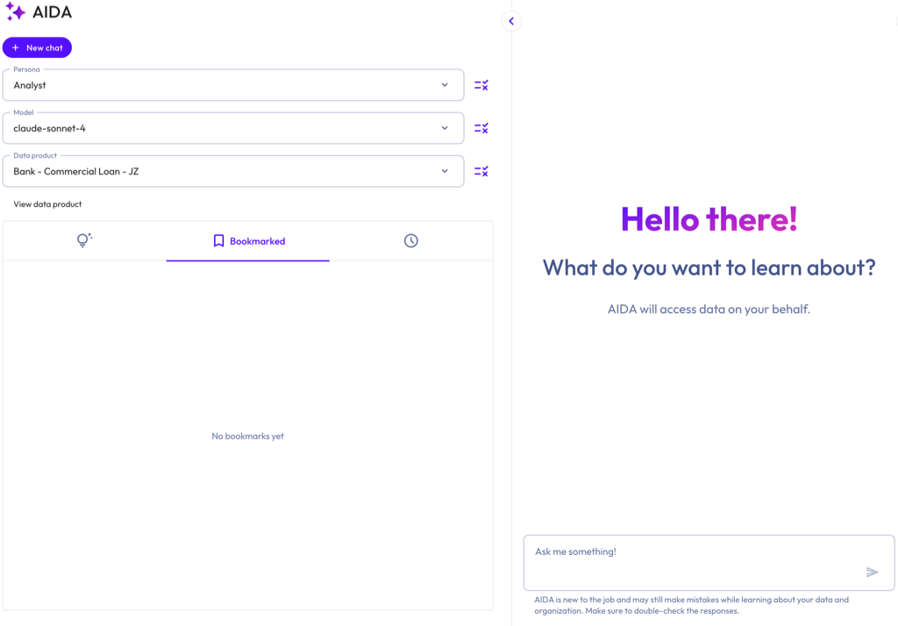
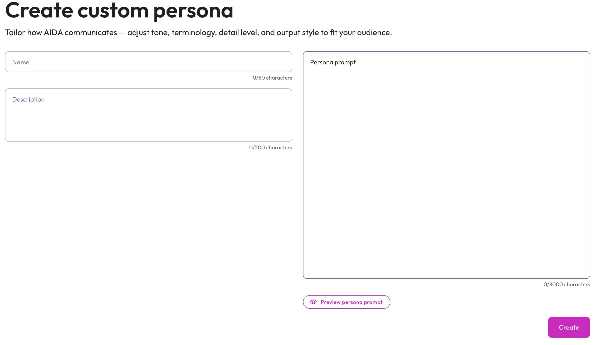

AI Data Assistant (AIDA)#
Starburst’s AI Data Assistant (AIDA) is a conversational analytics assistant. AIDA accepts natural language queries and translates them into SQL, then executes those queries against the data sources configured in your Starburst account. AIDA returns results in formats that best suit your query, such as summaries, observations, or grids.
AIDA lets you perform data analysis using natural language. It is designed for business users and decision-makers who want answers from their data without writing SQL, as well as analysts and data engineers who want to explore data quickly.
AIDA is powered by the Starburst AI agent, the underlying agentic engine that converts natural language into SQL, runs queries, uses tools, and analyzes results.
Requirements#
To use AIDA, you need:
A valid AI workflows license.
A valid Agentic layer license.
Access to at least one configured AI model.
Existing data products (curated datasets) that you want to analyze. Starburst recommends enriching your data products to improve answers from AIDA.
How AIDA works#
AIDA uses a large language model (LLM) to interpret your question, using the data product you select as context. When you ask AIDA a question, it:
Generates and executes SQL. Before producing a final answer, AIDA may return exploratory queries (such as sampling rows with a
LIMITclause) to understand the data, observe the results, and refine its approach. AIDA repeats this pattern as needed, then generates the final query against the data specified in your data product. Depending on the complexity of your question, AIDA might show you the generated SQL for review before running it.Returns an answer. AIDA executes queries against live data and presents results in a readable format (for example, a summary or data grid). Depending on the persona you select, AIDA might return executive or technical summaries, key observations, implementation warnings, or recommended next steps. Responses reflect the current state of your data. AIDA does not cache results.
AIDA uses a chat-style interface that supports follow-up questions, query refinements, and requests for AIDA to explain its reasoning or the SQL it generated. This lets you explore data iteratively, without requiring you to restart the session.
AIDA only queries the datasets exposed by the data product you select. The data product provides context AIDA needs to generate accurate queries. To analyze data from a different source, switch to a data product that includes it.
Personas#
AIDA supports three built-in personas: executive, analyst, and data engineer. Each persona tailors its responses and level of detail to suit different user roles. You can also create custom personas to fit additional audiences. See Custom personas.
To view the specific prompt used for each built-in persona, click the more_vert options menu next to the Persona menu, and select rule View persona prompt.
The following sections describe the built-in personas.
Warning
The ability to create custom personas using the
ai.agent.persona-directory-path configuration property and JSON files has been
removed. Remove the property from your coordinator configuration file, or your
cluster fails to start. You can now create and manage custom personas in the
Starburst Enterprise web UI.
Executive#
Provides high-level summaries tailored to executives and decision-makers.
Focuses on business insights and trends.
Omits technical detail unless explicitly requested.
Presents concise bullet points for quick understanding.
Analyst#
Offers detailed analytical summaries suitable for analysts and data scientists.
Includes statistical analysis and relationships in the data.
Adds contextual information and potential implications.
May include suggestions for further exploration.
Data engineer#
Provides technical summaries tailored to engineers.
Focuses on structure, data quality, and metadata.
Includes schema details, cardinality, and patterns.
Highlights potential data issues or anomalies.
Accessing AIDA#
To access AIDA, you can:
Click AI > AIDA in the SEP navigation menu.
Go to your SEP coordinator URL with
/agent/aidaappended. For example:https://sep-coordinator.example.com/agent/aida
Additionally, you can access AIDA directly from a data product:
In the SEP navigation menu, click the Data products menu tab.
Select an existing data product.
Click the Ask AIDA icon next to the Enrich with AI button.
Using AIDA#
In the AIDA UI, select a persona from the Persona menu to control the format and detail level of AIDA’s responses. To review the prompt used for the selected persona, click the more_vert options menu next to the Persona menu, and select View persona prompt. To create, clone or edit all personas for your account, select Manage personas. See Custom personas.
From the Model menu, select one of your configured AI models. Click the rule icon next to the Model menu to view the existing model’s system-level prompt or configure a new one. See also, General system prompts.
From the Data product menu, select the data product that you want to analyze. Click the View data product link to see the datasets contained within a data product, an overview of the data product, or usage examples.
Enter a question or prompt for AIDA in the text box. For example, you can:
Query specific metrics or trends (
What are our top-selling products?orShow me revenue by region.).Explore available data (
What tables do we have?orWhat customer data is available?).Run specific analyses or create reports.
Press Enter or click the send submit button. Double-check all responses provided by AIDA.

Note
Switching AI models during an active chat session creates a new session. The previous session remains available in your schedule Chat history.
Suggested prompts#
AIDA can suggest prompts for you to run. These are inherited from the Description field provided in any usage examples that were created for the data product. Click the tips_and_updates Suggestions tab to view suggestions.
Chat history#
Use schedule Chat history to review past AIDA chat sessions, including the active persona during each session. Chat history shows the steps that AIDA performed, including any tool calls and SQL queries executed during the session. Chat sessions are deleted after 90 days.
AIDA chat sessions are tied to a specific user, not a role. Only the user who initiated the chat session can view its history.
Manage chats#
Each chat session appears in the schedule Chat history.
To pin a chat, hover over it and click the push_pin pin icon. Pinned chats appear at the top of your history list, sorted by most recent activity. Click the icon again to unpin. For more information, read Pinned chats.
To rename a chat, hover over it and click the more_vert options menu, then select Rename.
To delete a chat, hover over it and click the more_vert options menu, then select Delete.
Use the search search bar to find previous chats by name.
The following table describes the icons used in the AIDA chat dialog:
Icon |
Description |
|---|---|
| content_copy | Copy the response to clipboard. |
download_2 |
Download the response. |
send |
Submit a question. |
stop_circle |
Cancel the in-progress response. |
fullscreen |
Open in fullscreen. |
close |
Exit fullscreen. |
more_vert |
Open the options menu. |
add |
Start a new chat. |
search |
Search bar. |
push_pin |
Pin a chat. |
edit |
Rename a chat. |
delete |
Delete a chat. |
Pinned chats#
Pinned chats appear at the top of your chat history. Pin a chat to keep important or ongoing chat sessions easily accessible. Pinned chats are visible only to you.
To pin or unpin a session:
Navigate to the scheduleChat history tab, hover over the desired chat, and click the push_pin pin icon.
Click the push_pin pin icon again to unpin.
Pinned chats appear above unpinned chats in the chat history. Chats within each group are sorted by most recent activity. When you resume a pinned chat and send a message, it moves to the top of the pinned group.
Deleting a chat session also removes its pin.
Visualizations#
AIDA can render interactive charts within your chat session, in response to query results. Charts can make it easier to see trends over time, rankings, comparisons across categories, or distributions. Click the Ask button on a chart to ask a follow-up question about the entire chart, or click a data point and select Ask about this to ask about a specific value.
Use visualizations to:
Spot trends, outliers, and distributions at a glance.
Compare values across categories, time periods, or segments.
Dive deeper into a specific data point by clicking a chart element and asking a follow-up question.
Iterate on a result without re-running the query, such as switching chart types or reframing the same data in a follow-up prompt.
AIDA determines when to render a chart based on the content of your query
results. Aggregated data, time series, rankings, comparisons, and distributions
typically produce a chart. Exploratory queries, count checks, and single-value
results do not. You can also explicitly request a chart in your prompt, for
example by asking AIDA to chart, plot, or show the results.
If AIDA cannot generate a chart for the requested data, it displays the results as a data table.
Best practices#
Describe what you want to see. Prompts that include phrases like
trend over time,top 10,share of total, orcompare by regiontend to produce better charts than vague prompts.Ask for a specific chart type when you have one in mind. For example,
Show revenue by region as a bar chart. If the chart type is not a good fit for the data, AIDA explains why and recommends an alternative.Refer to earlier results in follow-up prompts to iterate without re-running the query. For example,
Change that to a pie chartorPlot the data you retrieved earlier.
Limitations#
AIDA generates one chart per response, rendered after the final query that answers your question.
SQL result sets larger than 500 rows are truncated before AIDA generates a chart. To visualize a larger dataset, refine your query to aggregate, filter, or rank the results.
If AIDA cannot produce a valid chart after three attempts, it returns a data table containing the same results.
Visualizations reflect the data returned at query time. AIDA does not cache or refresh chart data automatically.
Custom personas#
In addition to the three built-in personas, you can create custom personas that tailor how AIDA communicates with a specific audience. Each custom persona consists of a name, description, and a persona prompt that defines AIDA’s tone, terminology, detail level, and output structure for that audience.
Custom personas appear in the Persona menu alongside the built-in personas and are available to all users that have access to your SEP cluster.
Note
To create and manage personas, you must have the sysadmin role.
Create a custom persona#
You can create a custom persona from a number of places in the AIDA UI: the Persona menu or the Manage personas dialog. Both places let you create a new persona or clone an existing one. You can clone both built-in personas and existing custom personas.
From the Persona menu:
Click addCreate custom persona.
In the Create custom persona dialog, select one of the following:
Create new custom persona: Starts with an empty form.
Clone existing persona: Starts with a form prepopulated from an existing persona. When selected, a Persona dropdown appears. Select any built-in or existing custom persona to use as the starting point.
Click Next.
From the Manage personas dialog:
Click the more_vert options icon next to the Persona menu, and select Manage personas.
Do one of the following:
Click Create custom persona to create a new persona.
Click the more_vert options menu of the desired persona, and select Clone to clone an existing persona.
Enter the following details in the Create custom persona dialog form:
Name for the persona. This name appears in the Persona menu. The name must be unique. The maximum length is 60 characters.
Description: The description appears under the persona name in the Persona menu and in the Manage personas dialog. Use it to summarize the persona’s audience and purpose. The maximum length is 200 characters.
Persona prompt: The prompt defines how AIDA writes its responses when this persona is selected. Specify the audience, tone, terminology, and any desired output structure. The maximum length is 8,000 characters.
Optionally, click Preview persona prompt to view the full prompt.
Click Create. The new persona is listed in the Persona menu and can be viewed in the Manage personas dialog.

Manage personas#
The Manage personas dialog lists all personas available in your account, both built-in and custom, along with their descriptions. To open the dialog, click the more_vert options icon next to the Persona menu, and select Manage personas.
In the Manage personas dialog, you can:
View prompt: Click View prompt of the desired persona to see the full persona prompt.
Edit: Click the more_vert options menu of the desired persona to open the Edit persona dialog, where you can update the name, description, and persona prompt. Click Save to apply your changes. This is available for custom personas only. You cannot edit built-in personas.
Clone: Click the more_vert options menu of the desired persona and select Clone to create a new custom persona prepopulated with the selected persona’s name, description, and prompt. See Create a custom persona. This is available for all personas.
Delete: Click the more_vert options menu of the desired persona to open the Delete persona? dialog. Type
DELETEto enable the Yes, delete button, then click Yes, delete to permanently remove the persona from your account. This action cannot be undone. Any active chat sessions that use the deleted persona will fail to generate new replies until a different persona is assigned. This is available for custom personas only. You cannot delete built-in personas.Search: Use the Search personas field to filter the list by name.
Create custom persona: Click Create custom persona to open the Create custom persona dialog. See Create a custom persona.
Guardrails#
AIDA’s behavior is governed by cluster-wide guardrails. Depending on how an administrator configures them, AIDA might decline a request, ignore an instruction embedded in your data, or reject a message that is too long. When this happens, AIDA returns a short message explaining that it cannot help, and the chat session continues.
Customize appearance and theme#
You can personalize your AIDA agent interface by customizing the appearance settings. Configure branding elements like logos, backgrounds, and welcome text to match your organization’s identity. Customizing AIDA’s appearance requires the customize login user interface privilege.
After you have the necessary privileges, go to User menu > Settings > Appearance and theme in the Starburst Enterprise web UI to customize your login and agent screens.
For more information about customizing AIDA’s appearance, see Appearance and theme.
Configure Starburst’s AI agent#
The Starburst AI agent is the engine that powers AIDA. You can configure the AI agent through coordinator configuration properties.
To configure the Starburst AI agent, add the following property to your coordinator configuration file:
starburst.agent.enabled=true
General configuration properties#
The following table contains general configuration properties. Add relevant properties to the coordinator configuration file.
Property name |
Description |
Default |
|---|---|---|
|
Specifies which model ID the AI agent can use, defined as regular expression patterns. By default, the AI agent allows all Claude 4, GPT-5, Gemini 3, Gemini 2.5, Opus, and Qwen 3 model groups:
Caution This property bypasses model validation. Use it only to test custom or on-premises models when you understand and accept the risks of potentially unreliable agent behavior. Starburst values your feedback on any issues encountered with unvalidated models. For more information, See Model validation. |
|
|
Specifies the maximum number of messages included in a single session
compaction batch. The minimum value is |
|
|
Specifies the minimum number of messages required before session compaction
is triggered. The minimum value is |
|
|
Specifies the character count threshold that triggers session compaction.
The minimum value is |
|
|
Specifies the number of most recent messages at the end of the conversation
that are not summarized during session compaction. The minimum value is |
|
|
Enables data profiling. When set to |
|
|
Enables the guardrails feature. When set to |
|
|
Sets the maximum duration a query generated by the AI agent is allowed to run. If the runtime exceeds the set limit, the query is canceled. Warning When this property is enabled, users must have permission to configure the query_max_run_time session property or the query fails. |
|
|
Sets the maximum size of a result set that the agent can return. The agent
truncates results that exceed the set limit. The possible value can range
from |
|
|
Maximum wait time per SQL generation attempt. This applies to each model
call individually. Set it high enough to accommodate your slowest configured
model. The minimum value is |
|
|
Sets the maximum number of concurrent LLM requests allowed for SQL
generation across all users and sessions. Set this high enough to avoid
request queueing under expected load. When not set, concurrency is
unbounded. The minimum value is |
|
|
Specifies the maximum number of sample queries included in the SQL
generation prompt. The minimum value is |
|
|
Comma-separated list of model IDs used for SQL generation. For each model,
the agent generates the number of SQL expressions set by
|
|
|
Specifies the number of SQL expressions generated per model. The minimum
value is |
|
|
Enables AI-based session compaction. When enabled, older segments of the chat session’s history are summarized to control LLM context size while preserving key information needed for context. |
|
|
Some LLMs do not format tool calls properly and return them inline as part
of the assistant response. When this property is enabled, if the model
returns inline tool calls in its response, the agent attempts to extract the
tool calls from the response and to execute it. When this property is set to
|
|
|
Enables or disables the Starburst AI agent. When disabled, it also disables AI features that rely on the AI agent. |
|
Model Validation#
Before deployment, all models are tested for their ability to follow complex instructions and use tools. This process has three possible outcomes:
Fully approved: Models that can follow complex instructions requiring tool use.
Conditionally available: Models that use tools with simple instructions but fail complex instruction tests. These appear with a yellow indicator in the agent model selector.
Unavailable: Models that fail both tests and cannot be used with the agent.
By default, the ai.agent.allowed-models-regex property uses patterns that
match only fully approved and conditionally available models. You can configure
this property to test custom or on-prem models that have not been validated.
Unvalidated models may produce unreliable results. Use this property only when
necessary and with the understanding that agent behavior may be unreliable.
Starburst encourages you to provide feedback about any issues you encounter when
using unvalidated models.
Data profiling#
Data profiling can improve natural-language-to-SQL accuracy. When enabled, the agent collects sample rows and column statistics from data product datasets and embeds that information into the language model prompts it uses to generate SQL. Sample rows are collected for both views and materialized views. Column statistics are collected for materialized views only.
To enable data profiling, set the following property in your coordinator configuration file:
ai.agent.data-profile.enabled
The following table details additional configuration properties for data profiling.
Property name |
Description |
Default |
|---|---|---|
|
Enables data profiling. When set to |
|
|
Specifies the maximum number of rows fetched per dataset when collecting
sample data. The minimum value is |
|
|
Sets the maximum duration allowed for each data
profiling query. When a profiling query exceeds this limit, the agent
cancels it and excludes that dataset’s data from the profile. The minimum
value is |
|
|
Specifies the maximum number of datasets included in the data profile for a
given data product. When not set, all datasets in the data product are
profiled. The minimum value is |
|
|
Sets the duration a data profile is retained in memory
after it was last accessed. The minimum value is |
|
|
Sets the maximum number of data profiles held in memory at one time. When
the cache reaches this limit, the least recently accessed entries are
removed. The minimum value is |
|
Resource group governance#
All data profiling queries are tagged with the Trino client tag
agent-data-profiler. You can use this tag in resource group
rules to route and limit profiling queries separately
from user queries.
The following example shows a selector that routes profiling queries into a dedicated resource group:
{
"selectors": [
{
"clientTags": ["agent-data-profiler"],
"group": "profiling"
}
]
}